#11901 Spider-Man: Far from Home 


 IMDB-Wertung: 7.7 / 10
IMDB-Wertung: 7.7 / 10  Tomatometer: 90
Tomatometer: 90  Metascore: 69
Metascore: 69 
Während Peter mit Michelle und Ne auf Klassenfahrt in Europa ist, wird er von Nick Fury rekrutiert. Dieser offenbart ihm, dass Europa von sogenannten „Elementals“, Wesen aus Feuer, Wasser und Stein, angegriffen wird. Nun soll Peter zusammen mit einem Mann namens Mysterio gegen diese Wesen kämpfen.
Jahr: 2019
Dauer: 129 Minuten
FSK: 12
Land: USA Studio: Columbia PicturesTonspuren: DTS - ,
Untertitel: Deutsch,
Auflösung: 1080p (1920x1080) Größe: 12083 MB
Genre: Action, Sci-Fi, Abenteuer
Regisseur: Jon Watts
Drehbuch: Chris McKenna, Erik Sommers, Stan Lee, Steve Ditko
Soundtrack: Michael Giacchino
Darsteller:
 Tom Holland als Peter Parker / Spider-Man
Tom Holland als Peter Parker / Spider-Man Samuel L. Jackson als Nick Fury
Samuel L. Jackson als Nick Fury- 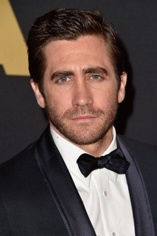 Jake Gyllenhaal als Quentin Beck / Mysterio
 Marisa Tomei als May Parker
Marisa Tomei als May Parker- Jon Favreau als Happy Hogan
- 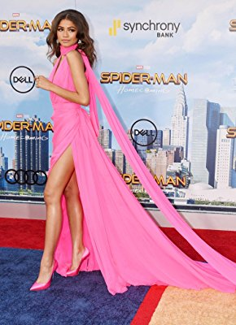 Zendaya als MJ
- 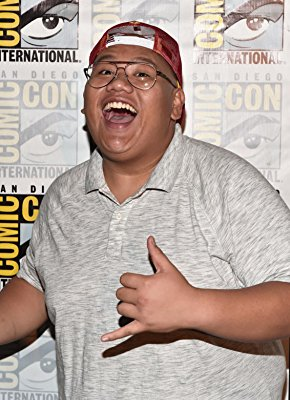 Jacob Batalon als Ned Leeds
- 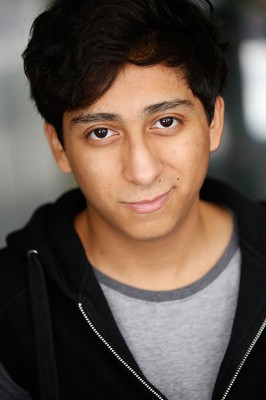 Tony Revolori als Flash Thompson
- Angourie Rice als Betty Brant
- Remy Hii als Brad Davis
 Martin Starr als Mr. Harrington
Martin Starr als Mr. Harrington J.B. Smoove als Mr. Dell
J.B. Smoove als Mr. Dell- 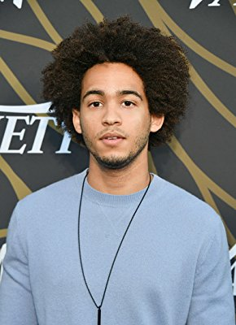 Jorge Lendeborg Jr. als Jason Ionello
- 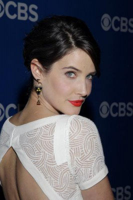 Cobie Smulders als Maria Hill
 Numan Acar als Dimitri
Numan Acar als Dimitri- Zach Barack als Zach
- Zoha Rahman als Zoha
- Yasmin Mwanza als Yasmin
- Joshua Sinclair-Evans als Josh
- Toni Garrn als The Seamstress
- 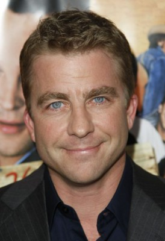 Peter Billingsley als William Ginter Riva
- Clare Dunne als Victoria
- Nicholas Gleaves als Guterman
- Claire Rushbrook als Janice
 J.K. Simmons als J. Jonah Jameson
J.K. Simmons als J. Jonah Jameson- Jeroen van Koningsbrugge als Dutch Soccer Hooligan
- Michael de Roos als Dutch Soccer Hooligan
- Anjana Vasan als Queens Reporter
- Brian Law als Queens Reporter
- 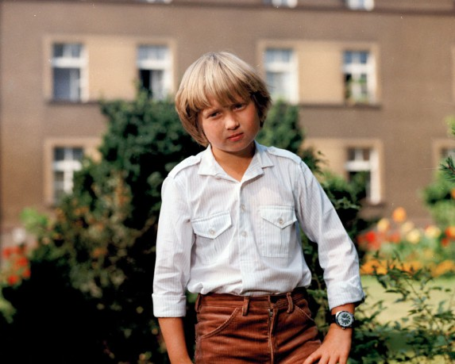 Lukás Bech als Helpful Dutch Man
- Alessandro Giuggioli als Italian Street Vendor
- 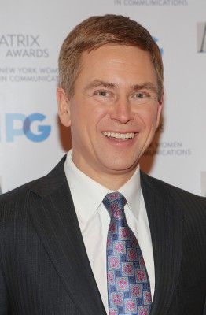 Pat Kiernan als Pat Kiernan
- Maria Alexandrova als Tourist in Venice (uncredited)
- Kristen Alminta als Police Officer (uncredited)
 Peter Arpesella als Airplane Pilot (uncredited)
Peter Arpesella als Airplane Pilot (uncredited) Lasco Atkins als Salvation Army guest (uncredited)
Lasco Atkins als Salvation Army guest (uncredited)- Sitara Attaie als Dutch Lady (uncredited)
- Peter Bankole als Mob Boss (uncredited)
- Blair Barnette als Queens Reporter (uncredited)
- 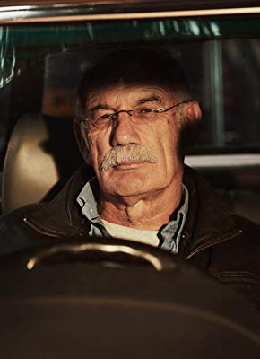 Pierre Bergman als Venice Fish Seller (uncredited)
- 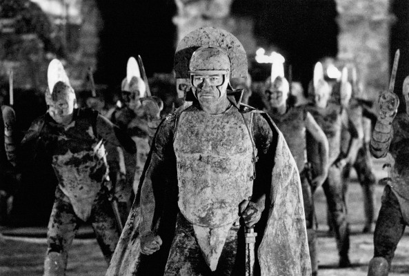 Bruno Bilotta als Mob Boss 2 (uncredited)
- 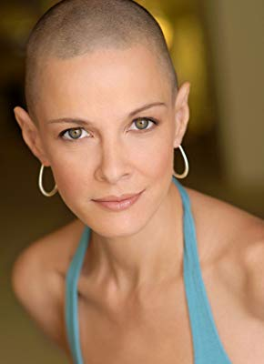 Sharon Blynn als Soren (uncredited)
 Jeff Bridges als Obadiah Stane (archive footage) (uncredited)
Jeff Bridges als Obadiah Stane (archive footage) (uncredited)- Sokol Cahani als Mob Boss (uncredited)
- Gianni Calchetti als Venetian Fish Stall Owner (uncredited)
- Eric Patrick Cameron als Midtown High Student (uncredited)
- Darren Lee Campbell als Victoria's Crew (uncredited)
- Hélène Cardona als Austrian Backpacker (uncredited)
- Dian Cathal als American Reporter (uncredited)
- Jake Cerny als Airport Traveler (uncredited)
Datei: X:\Comic-Filme\Spider-Man\Spider-Man Far from Home (2019, FSK12, 1920x1080) 3D.mkv seit 08.10.2019
Festplatte: Comicverfilmungen+MusikCD
 Es gibt insgesamt 14 Filme in der Gruppe 'Comic-Filme\Spider-Man'
Es gibt insgesamt 14 Filme in der Gruppe 'Comic-Filme\Spider-Man'